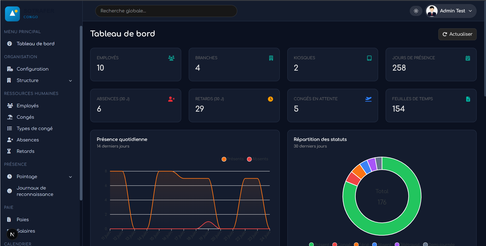
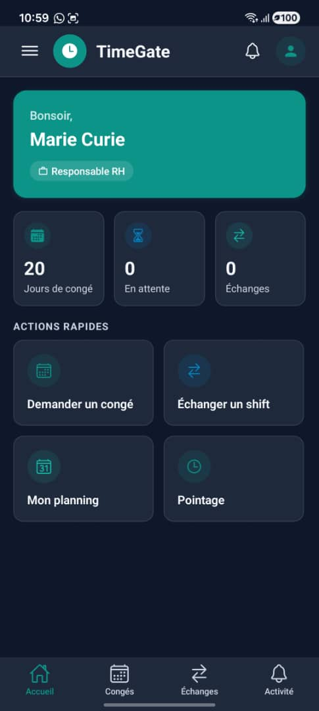

Web
Dashboard RH
Présences, exports CSV/PDF, suivi par employé — capture avec jeux de données de démonstration.

Plateforme SaaS de pointage intelligent et de gestion RH — reconnaissance faciale, PIN et QR, pensée pour le terrain africain.
TimeGate est une plateforme SaaS de pointage intelligent et de gestion RH opérationnelle. Elle remplace registres papier et badges partagés par un flux numérique : tablette en mode kiosk, identification en quelques secondes, présences consultables en temps réel.
Pilote rémunéré (PRO à 25 000 FCFA/mois, premier client sans matériel fourni ; tarif catalogue 50 000 FCFA/mois) — SSII, Brazzaville, ~10 personnes : pointage, congés et dashboard en usage · fiche §1.6 (sans métriques publiées à ce stade).
Équipe : 2 développeurs expérimentés (dont le porteur), 1 designer UI/UX, 1 commercial terrain · support admin Mazala Firm.
Produit livré au pilote
Composants techniques
Modes de pointage
Sommaire
TimeGate est une plateforme SaaS de pointage intelligent et de gestion RH destinée aux PME, industries et organisations multi-sites en Afrique centrale et au-delà. Le projet répond à un constat terrain récurrent : la gestion de présence repose encore largement sur des registres papier, des badges partagés ou des systèmes importés coûteux et peu adaptés au contexte local.
TimeGate remplace ces approches par un flux numérique simple : un smartphone ou une tablette en mode kiosk permet à l'employé de s'identifier en quelques secondes ; les événements de présence sont enregistrés côté serveur et consultables en temps réel par les équipes RH via un tableau de bord web.
État du projet : cinq applications clientes et une API Swagger déployées en production pilote — SSII ~10 collaborateurs, Brazzaville, pilote rémunéré (§1.6). Indicateurs quantitatifs et témoignages client non publiés — accord en cours.
| Objectif | Description |
|---|---|
| Fiabiliser le pointage | Réduire la fraude via identification biométrique ou alternatives traçables |
| Automatiser la RH | Présences, retards, absences, congés ; planning et paie en extension |
| Déployer sans matériel lourd | Utiliser téléphone/tablette plutôt que TPE dédiés coûteux |
| Multi-sites | Gérer plusieurs branches sous une même organisation |
| Industrialiser en SaaS | Modèle multi-tenant avec abonnements, quotas et console plateforme |
| Public | Application | Rôle |
|---|---|---|
| Administrateur RH | Dashboard RH | Employés, kiosks, présences, congés |
| Manager | Dashboard RH | Équipe du jour, validations congés |
| Employé | App Employé | Pointages, congés, QR punch |
| Opérateur kiosk | App Kiosk | Terminal de pointage |
| Super-admin plateforme | Console SaaS | Multi-tenant, plans |
| En production (pilote) | Roadmap / non activé |
|---|---|
| Pointage visage, PIN, QR | NFC (matériel variable) |
| Dashboard présences, congés | Paie / runs de paie |
| App employé, resync offline | Copilote IA manager |
| Notifications push | Webhooks client connectés |
| Indicateur | Valeur |
|---|---|
| Client | SSII (anonymisable), Brazzaville |
| Effectif / site | ~10 collaborateurs, 1 kiosk tablette |
| Statut commercial | Pilote rémunéré — pack PRO à 25 000 FCFA/mois (réduction exceptionnelle premier pilote ; tarif catalogue 50 000 FCFA/mois) |
| Matériel | Tablette kiosk non fournie — appareil du client |
| Modules déployés | Pointage visage, PIN, QR · dashboard présences · congés · app employé |
| Paie / NFC | Non activés au pilote |
| Métriques & témoignages | Non publiés dans ce DAT — consolidation et accord écrit du client en cours au 30/08/2026 |
Indicateurs prévus après accord client : taux succès visage, délai kiosk, volume pointages/jour, satisfaction admin. Les chiffres et retours qualitatifs seront intégrés dans une prochaine version du dossier.
| Alternative | Limite terrain | Apport TimeGate |
|---|---|---|
| Registre papier | Fraude, pas de traçabilité | Pointage horodaté, vue manager temps réel |
| TPE ZKTeco / bornes | Coût matériel, SAV limité | Kiosk sur tablette existante |
| SaaS RH importés | Prix EUR/USD, offline faible | FCFA, resync offline visage/QR |
La preuve terrain porte sur le pointage fiable et le suivi RH opérationnel — pas sur un ERP complet au stade pilote.
| Service | Localisation pilote |
|---|---|
| PostgreSQL (embeddings, présences) | AlwaysData — UE |
| API + moteur facial | Render — US/UE |
| Photos | Cloudflare R2 |
| Frontends | Vercel (edge CDN) |
Latence depuis Brazzaville : quelques secondes en 4G normale ; cold start Render possible. Compensation : resync offline, PIN secours, cible GCP §2.5.
Cloud non africain volontaire (qualité/prix, maîtrise GCP). Réévaluation régionale quand le volume clients le justifiera.
TimeGate est organisé en monorepo : cinq applications clientes et une API centrale, chacune déployée indépendamment.
/api/v1
| Composant | Technologie | Responsabilité |
|---|---|---|
| API TimeGate | NestJS 10, Bun, Prisma 7 | Logique métier, auth, pointage, RH, SaaS |
| Dashboard RH | Next.js 15, NextAuth v5 | Backoffice admin/manager tenant |
| Console SaaS | Next.js 15, NextAuth v5 | Administration plateforme |
| App Kiosk | Expo ~55, React Native | Terminal pointage (visage/PIN/NFC/QR) |
| App Employé | Expo ~57, React Native | Portail self-service employé |
| Moteur facial | Python, face_recognition | Extraction embeddings 128D |
| Base de données | PostgreSQL 16 | Persistance multi-tenant |
| Object storage | Cloudflare R2 | Photos enrollment + logs |
Toutes les applications communiquent via HTTPS et
le préfixe /api/v1.
| Client | Authentification | Protocole |
|---|---|---|
| Dashboard RH / Console SaaS | JWT Bearer (session NextAuth) | REST JSON |
| App Employé | JWT Bearer + identifiant appareil | REST JSON |
| App Kiosk | JWT longue durée (mobile_device) | REST JSON + multipart |
| Kiosk temps réel | SSE GET /auth/kiosk/events |
Server-Sent Events |
Documentation Swagger/OpenAPI à
/api/v1/docs.
L'API NestJS couvre les domaines métier suivants :
Guards globaux : validation JWT, contrôle des rôles, vérification abonnement. Guards complémentaires : accès opérationnel tenant, portail employé, appareil de confiance.
L'hébergement actuellement en service (pilote) est provisoire : stack légère à coût maîtrisé. La cible production est Google Cloud (détail §4.5).
| Composant | Hébergement | Rôle |
|---|---|---|
| Dashboard RH | Vercel | Frontend pilote |
| Console SaaS | Vercel | Administration plateforme |
| API TimeGate | Render | API + moteur facial |
| PostgreSQL | AlwaysData | Base pilote |
| Photos | Cloudflare R2 | Stockage objets |
| Apps mobiles | EAS Build | Distribution iOS/Android |
Suffisant pour le pilote SSII (~10 collaborateurs) et les premiers clients à faible volume.
POST /auth/login — JWT access token + refresh token
opaque (48 octets).
Authorization: Bearer <jwt>.
POST /auth/refresh.JWT_EXPIRES_IN (défaut 8 h),
JWT_REFRESH_EXPIRES_IN (défaut 30 j).
Le serveur recharge l'utilisateur depuis PostgreSQL ; le
companyId provient de la base.
POST /auth/employee/identify — découverte par email.
POST /auth/employee/login — mot de passe +
identifiant appareil.
POST /auth/kiosk/bootstrap — auth admin sur
appareil.
POST /auth/kiosk/provision — JWT longue durée pour
la branche.
Compte plateforme distinct ; accès Console SaaS (rôle PLATFORM_ADMIN).
| Entité | Usage |
|---|---|
| Utilisateur tenant | Login Dashboard RH, rôles ADMIN / MANAGER / EMPLOYEE |
| Employé RH | Fiche métier, embeddings faciaux, PIN, badge NFC |
| Opérateur plateforme | Console SaaS |
| Lien employé ↔ login | Portail employé |
Multi-tenant : chaque entité porte un identifiant organisation. Scoping explicite par service.
Rôles : ADMIN (accès complet), MANAGER (opérationnel, branches assignées), EMPLOYEE (portail uniquement).
| Étape | Mécanisme |
|---|---|
| Création | 1 kiosk par branche |
| Provisionnement | JWT → hash SHA-256 en base |
| Heartbeat | POST /auth/kiosk/heartbeat |
| Révocation | Reset accès + notification SSE |
Enregistrement local → approbation admin → états PENDING / TRUSTED / REVOKED. Requis pour QR punch.
Token FCM via POST /devices/register — Dashboard RH et
App Employé.
POST /auth/kiosk/verify · photo multipart · token
kiosk vérifié
| Mode | Endpoint | Particularités |
|---|---|---|
| PIN | POST /auth/kiosk/verify-pin |
Hash bcrypt ; connexion en direct requise |
| NFC | POST /auth/kiosk/verify-nfc |
Badge UID ; synchronisable offline |
| QR | Challenge + scan employé | Appareil TRUSTED requis |
| App Employé | POST /employee/break-resume |
Pointage mobile |
TimeGate ne prétend pas être offline-first : enrollment, admin et PIN requièrent le réseau. En revanche, le pointage peut être bufferisé puis rejoué à la reconnexion.
| Aspect | Comportement |
|---|---|
| Modes concernés | Reconnaissance faciale et badge NFC |
| Stockage local | Photos JPEG et UID badge en file locale |
| Synchronisation | Rejeu automatique à la reconnexion · horodatage · clé d'idempotence |
| Politique serveur | Paramétrable par organisation · fenêtre de validité défaut 12 h |
| Anti-doublon |
X-Idempotency-Key + contrainte unique en base
|
| Aspect | Comportement |
|---|---|
| Mode concerné | Scan QR du challenge kiosk |
| Stockage local | Payload scanné en stockage sécurisé |
| Synchronisation |
POST /employee/qr-punch/sync à la reconnexion
|
| Prérequis | JWT employé + appareil TRUSTED |
Le pointage PIN requiert une connexion en direct au serveur pour la vérification du code.
| Scénario | Comportement |
|---|---|
| Token kiosk révoqué | 401 · notification SSE au kiosk |
| Aucun visage détecté (local) | Blocage avant envoi à l'API |
| Aucun match facial | Log échec en base · message explicite sur le kiosk |
| Hors fenêtre horaire | Événement REJECTED ou REVIEW_REQUIRED |
| Hors géo-clôture | Rejet avec raison affichée |
| Abonnement suspendu | Blocage des écritures côté API |
| Timeout moteur facial | Erreur serveur · délai configurable · PIN secours si réseau OK |
En cas de coupure prolongée, les files kiosk (visage) et employé (QR) conservent les pointages dans la fenêtre configurée ; au-delà, l'administrateur est alerté via les logs et le support pilote.
| Aspect | Détail |
|---|---|
| Reconnaissance | Serveur API (comparaison côté serveur) |
| Détection locale | Caméra kiosk — présence et qualité du visage |
| Bibliothèque | Python face_recognition (dlib) |
| Embedding | Vecteur 128D, JSON en base |
| Seuil |
Cosinus ≥ FACE_VERIFY_THRESHOLD (défaut 0,82)
|
| Enrollment | POST /face/enroll (ADMIN) → R2 + base |
| Purge photos logs | Cron quotidien, défaut 30 jours |
Embeddings non exposés au kiosk ; routes enrollment réservées ADMIN.
PIN : hash bcrypt, min 4 caractères, vérification en temps réel, seuils d'échec paramétrables.
NFC : UID unique par organisation, lecture native, synchronisable offline.
X-Idempotency-Key.
X-Request-Id.
| Technologie | Usage | Justification |
|---|---|---|
| Next.js 15 | Dashboard RH, Console SaaS | SSR/RSC, déploiement Vercel |
| React 18 + TypeScript | Frontends web | Typage fort |
| Tailwind CSS 4 | Dashboard RH, Console SaaS | Cohérence visuelle |
| NextAuth v5 | Auth session web | Credentials → JWT API |
| Expo / React Native | App Kiosk, App Employé | iOS/Android, caméra/NFC |
| Technologie | Usage | Justification |
|---|---|---|
| NestJS 10 | API principale | Modularité, guards, Swagger |
| Bun 1.3 | Runtime API | Performance |
| Prisma 7 | ORM PostgreSQL | Migrations typées |
| Passport JWT | Authentification | Standard industrie |
| bcrypt | Mots de passe, PIN | Hashage adaptatif |
| Python face_recognition | Biométrie | dlib, subprocess isolé |
/api/v1 ·
documentation Swagger /api/v1/docs
| Composant | Service | Rôle |
|---|---|---|
| Dashboard RH / Console | Vercel | Frontends web |
| API TimeGate | Render | API NestJS + moteur facial Python |
| PostgreSQL | AlwaysData | Base pilote (UE) |
| Photos | Cloudflare R2 | Stockage objets (enrollment, logs) |
| Push | Firebase FCM | Notifications web et mobile |
| Apps mobiles | EAS Build | Distribution iOS / Android |
Stack suffisante pour le pilote SSII (~10 collaborateurs) et les premiers clients à faible volume. La cible production est Google Cloud (page suivante).
| Composant | Service GCP | Rôle |
|---|---|---|
| API TimeGate | Cloud Run | Scaling automatique, instances warm |
| Moteur facial | Cloud Run dédié | Charge isolée, montée en charge indépendante |
| PostgreSQL | Cloud SQL | Base managée, sauvegardes automatisées |
| Photos | Cloud Storage | Enrollment et logs de reconnaissance |
| Secrets | Secret Manager | Credentials centralisés |
| CI/CD | Cloud Build | Pipeline production |
| Monitoring | Cloud Logging / Monitoring | Observabilité et alertes |
Choix d'hébergement : le produit vise le terrain africain, mais l'infrastructure cloud n'est pas locale en Afrique à ce stade — choix volontaire pour le rapport qualité/prix et la maîtrise opérationnelle (expérience confirmée Google Cloud). Latence compensée par le resync offline, l'edge frontend et le choix de région GCP. Migration après validation commerciale du pilote.
| Outil | Usage |
|---|---|
| GitHub Actions | CI sur branche main — tests API, typecheck web |
| Bun | Install, build, tests API |
| EAS | Build et distribution apps mobiles (hors CI) |
| Prisma migrate deploy | Migrations en CI et au déploiement |
| Donnée | Protection |
|---|---|
| Identité (nom, email) | Scoping organisation |
| Mot de passe | Hash bcrypt |
| PIN kiosk | Hash bcrypt |
| Rôle | Guards + rechargement base |
| Appareil confiance | Statut + approbation admin |
| Entité | Description |
|---|---|
| Événement de présence | Modèle principal — type, statut, méthode auth |
| Check-in employé | Enregistrement journalier |
| Feuille de temps | Calcul journalier |
| Log reconnaissance | Trace vérification faciale |
| Donnée | Format / emplacement |
|---|---|
| Kiosk | Token hashé, statut, heartbeat, flags visage / NFC / QR |
| Appareil de confiance | Identifiant UUID, plateforme, statut PENDING / TRUSTED / REVOKED |
| Embedding facial | JSON — vecteur 128 floats en PostgreSQL |
| Photo enrollment | URL Cloudflare R2, liée à la fiche employé |
| Photos vérification | URL R2 — purge configurable (défaut 30 jours) |
Les embeddings ne sont jamais renvoyés au kiosk. L'enrollment facial est réservé aux administrateurs authentifiés.
| Donnée | Mécanisme |
|---|---|
| Photos logs reconnaissance | Cron quotidien — suppression R2 après durée configurable (défaut 30 j) |
| Embeddings faciaux | Conservés tant que l'employé est actif · supprimés à la suppression de la fiche |
| Événements de pointage | Historique complet en PostgreSQL |
| Isolation tenant | Scoping systématique par organisation |
| Chiffrement transit | HTTPS via hébergeurs (Vercel, Render, AlwaysData) |
| Composant | Limite identifiée |
|---|---|
| API NestJS | Stateless (JWT) — cold start Render en infra pilote |
| Moteur facial | Subprocess Python sur la même instance que l'API — concurrence limitée |
| Comparaison faciale | O(n) linéaire sur employés actifs — OK ~10–50 ; 200+ nécessite refonte |
| PostgreSQL | AlwaysData pilote — pas de réplica lecture |
| Phase | Effectif cible | Infrastructure | Moteur facial |
|---|---|---|---|
| Pilote (actuel) | ~10 | Render + AlwaysData | Subprocess linéaire — suffisant |
| PME | 50–100 | GCP Cloud Run + Cloud SQL | Service dédié, index vectoriel (pgvector) |
| Multi-sites | 100–500 | GCP multi-instance, monitoring | ANN / filtrage par branche |
L'objectif 50–500 collaborateurs (§11) suppose la migration GCP et l'optimisation du moteur facial — ce n'est pas garanti avec l'infrastructure pilote actuelle.
https://timegate.onrender.com/api/v1
/api/v1/docs
X-Request-IdDomaines : auth, employees, attendance/events, timesheets, leaves, payroll-runs, kiosks, face, notifications, system-config.
| Service | Intégration |
|---|---|
| Cloudflare R2 | SDK S3 |
| Firebase FCM | firebase-admin + SDK clients |
| Cloudflare AI | Copilote (prototype, non pilote) |
| SMTP (Nodemailer) | Emails transactionnels |
API REST documentée (Swagger). Webhooks HMAC configurables — aucun client pilote connecté. Connecteurs ERP/paie : roadmap §11.
| Mécanisme | Implémentation |
|---|---|
| JWT access token | Durée configurable (défaut 8 h) |
| Refresh token | 48 bytes aléatoires ; hash SHA-256 ; rotation |
| Kiosk token | JWT longue durée ; hash SHA-256 en base |
| Mots de passe / PIN | bcrypt cost 10 |
| Validation JWT | Rechargement utilisateur ; companyId depuis base |
CORS_ORIGIN)TimeGate applique le principe de minimisation : seules les données nécessaires au pointage et à la gestion RH sont collectées.
| Sujet | Pratique TimeGate |
|---|---|
| Finalité | Pointage et contrôle horaire — pas de surveillance continue |
| Base légale (cadre travail) | Exécution du contrat / intérêt légitime employeur — notice employés à formaliser par client |
| Alternative | PIN ou QR disponibles — pointage facial non obligatoire |
| Consentement | Information préalable des employés · responsabilité partagée client + TimeGate |
| Accès aux données | ADMIN organisation · embeddings jamais exposés au kiosk |
| Embeddings faciaux | Conservés tant que l'employé est actif · supprimés à la suppression de la fiche |
| Photos logs | Purge automatique après 30 j (configurable) · cron quotidien |
| Localisation | UE / US au stade pilote — voir §1.8 · cible GCP documentée |
| Isolation multi-tenant | Chaque organisation n'accède qu'à ses propres données |
Infrastructure : pilote HTTPS (Vercel, Render, AlwaysData). Roadmap conformité : registre de traitement type, notice biométrique client, audit externe avant déploiements >100 employés.
| Rôle | Composition |
|---|---|
| Porteur du projet | Styve Maba — coordination produit, architecture ; développeur (1/2) |
| Développement | 2 développeurs expérimentés (dont le porteur) — API, apps Expo, dashboards Next.js |
| Design | 1 designer UI/UX — web et mobile |
| Commercial terrain | 1 commercial — prospection PME, déploiement pilote, relation client |
| Support admin | Mazala Firm |
Développement, design et go-to-market terrain couverts — delivery concentré sur pointage + RH opérationnel.
| Environnement | Usage |
|---|---|
| Local | API, Dashboard RH, Console SaaS en développement |
| CI | PostgreSQL 16 éphémère (GitHub Actions) |
| Pilote | AlwaysData, Render, Vercel |
| Production (cible) | Google Cloud |
| Tests E2E | Base isolée, distincte de la production |
| Scope | Couverture |
|---|---|
| API use-cases | Auth, employees, attendance, face, NFC/QR/offline, payroll, SaaS |
| API E2E | Scénarios complets sur base isolée |
| Dashboard RH | Modules tour / onboarding |
| App Kiosk | États UI de scan |
| Apps mobiles (build) | Hors CI — builds EAS manuels |
| Frontend typecheck | Dashboard RH + Console SaaS en CI |
| Composant | Méthode |
|---|---|
| Dashboard RH / Console SaaS | Vercel (pilote) |
| API TimeGate | Render (pilote) → Cloud Run (production) |
| Base de données | AlwaysData (pilote) → Cloud SQL (production) |
| Apps mobiles | EAS Build |
API /api/v1 · schema base versionné · apps mobiles via
EAS.
| Évolution | Faisabilité |
|---|---|
| Nouveau mode pointage | Enum + endpoint + UI kiosk |
| Nouvelle organisation | Multi-tenant natif |
| Nouveau site/branche | Branche + kiosk associé |
| Intégration paie tierce | API payroll + connecteur |
Architecture modulaire NestJS : nouveaux modules métier sans impact clients existants. Multi-tenant : ajout d'organisations sans reconfiguration infrastructure.
TimeGate vise une croissance progressive ancrée dans des déploiements terrain réussis :
Le pilote rémunéré SSII valide le déploiement opérationnel à ~10 personnes. AfriTech 2026 permet de structurer la consolidation des métriques terrain et la montée en charge commerciale.
Documentation interactive Swagger à /api/v1/docs sur
l'API pilote (timegate.onrender.com).
Captures août 2026 — dashboard : données de démonstration ; kiosk et app employé : environnement pilote SSII (Brazzaville, ~10 collaborateurs).
Présences, exports CSV/PDF, suivi par employé — capture avec jeux de données de démonstration.

Pointage facial — mode principal au pilote · capture terrain.

Historique pointages, demandes de congés — capture environnement pilote.
